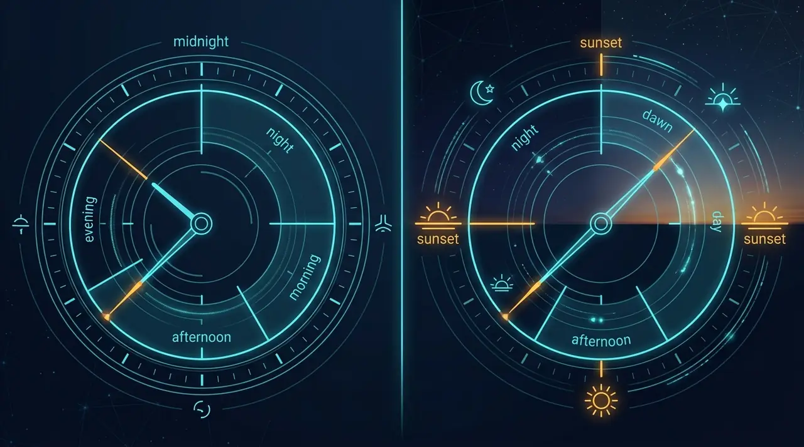

01 // fragmentation
Different day boundaries
Some software rolls the day at midnight, some at sunset, some at a fixed clock time — and rarely says which.
The problem
Prayer-time apps, Hijri calendars and institutional schedules each define the day, the date and the events a little differently. There is no shared, testable, language-independent contract to build against — so every product rebuilds it.
Boundary
The same events, the same moment — two different notions of “the day”.
Midnight-based software
Waqt

Concept artMeasured now
Fragmentation
Six ways Islamic time breaks between systems.
01 // fragmentation
Some software rolls the day at midnight, some at sunset, some at a fixed clock time — and rarely says which.
02 // fragmentation
Fajr and Isha are defined by sun depression angles that differ between authorities (Fajr angles in common use span roughly 15° to 19.5°). Waqt makes them explicit parameters.
03 // fragmentation
Arithmetic and observation-based Hijri calendars can start a month on different days. Waqt names the provider in every response and never lets the calendar influence solar astronomy.
04 // fragmentation
Standard recurrence rules have no primitive for “30 minutes before Maghrib”. Waqt’s scheduling endpoints resolve such rules against the real day.
05 // fragmentation
Where the sun does not set, many tools quietly substitute an invented time. Waqt returns an explicit UNDEFINED with the reason, and applies no automatic fallback.
06 // fragmentation
Without shared test vectors two implementations cannot prove they agree. Waqt ships a portable conformance contract (2.0.0, draft) with an independent implementation checked against it.
Outcome
Without a shared standard
With Waqt